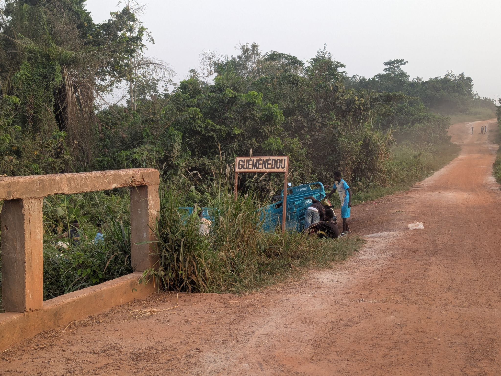
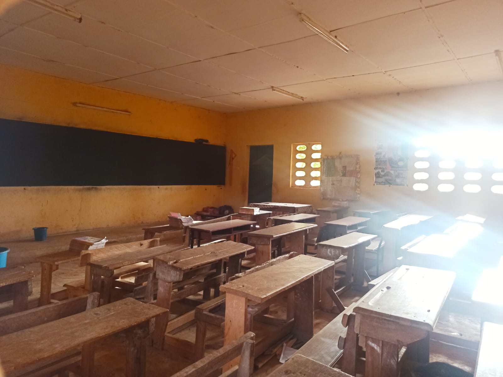
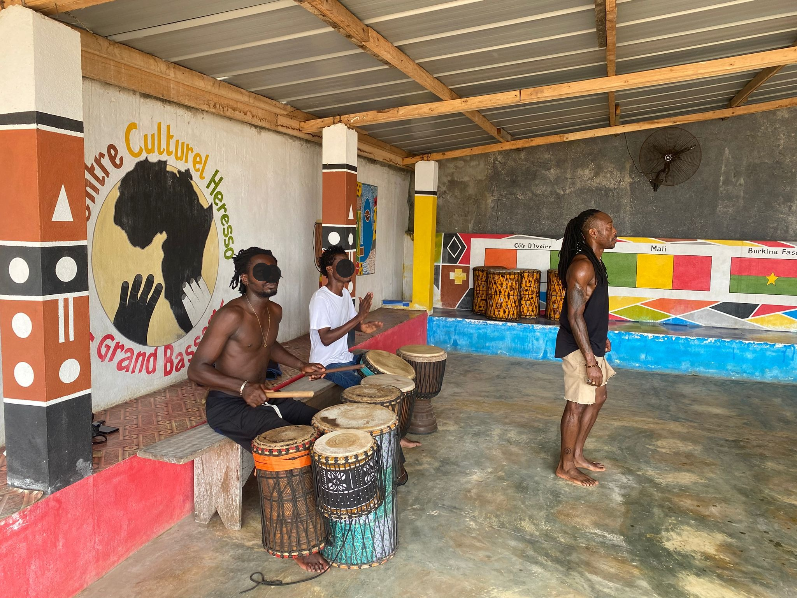

À Rosheim
Cours hebdomadaires
Danse traditionnelle africaine et percussions live, dans une ambiance dynamique et conviviale.
Découvrir les cours →Danse africaine · Humanitaire · Solidarité internationale
Awâllé signifie « aimons-nous » en bété.
FACIG fait vivre les danses et les rythmes d'Afrique de l'Ouest à travers ses cours, stages et animations.
Association à but non lucratif, FACIG soutient également le village de Guéménédou, en Côte d'Ivoire, à travers des projets concrets dans les domaines de la santé, de l'éducation et de l'accès à l'eau.

Guéménédou · Côte d'IvoireÀ Rosheim
Danse traditionnelle africaine et percussions live, dans une ambiance dynamique et conviviale.
Découvrir les cours →
À Guéménédou
École, dispensaire, maison de la sage-femme, sanitaires et accès à l'eau : des projets concrets menés avec le village.
Voir nos actions →
Danse & rencontres
Stages, ateliers et rendez-vous autour de la danse, de la musique et des cultures d'Afrique de l'Ouest.
Voir les stages →Une association à but non lucratif
Les cours de danse, les stages et les animations constituent l'essentiel des ressources de FACIG. Les bénéfices générés sont intégralement consacrés aux projets soutenus à Guéménédou.
Il est aussi possible de soutenir FACIG sans pratiquer la danse, par l'adhésion ou le don.
Comment soutenir FACIGCours 2026-2027
20h à 21h15 · Salle du Pilier des Arts
Sous la conduite de Cyrille Zouzoua, avec Moussa Ira aux percussions. Débutants comme confirmés sont les bienvenus.
Danser ici, pour agir là-bas.